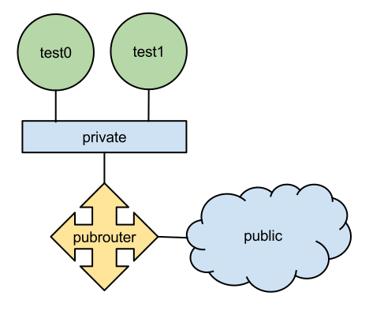

class: center, middle <img src="cloud-4.png" width="100" /> # RHOS 3.0 Quantum Jan. 15 2014 --- ## Quantum - Software defined networking - Virtual networks, address provisioning, routing, security groups. .center.small[![][neutron_hilite]] [neutron_hilite]: assets/arch-neutron.png --- ### Creating a private network ```bash quantum net-create net1 quantum subnet-create net1 192.168.0.0/24 --name subnet1 ``` --- ### Creating a public network ```bash quantum net-create public --router-external=True quantum subnet-create public 10.1.1.0/24 --name public_subnet \ --enable_dhcp=False \ --allocation-pool start=10.1.1.48,end=10.1.1.191 \ --gateway=10.1.1.1 ``` ### Routing the private network ``` quantum router-creater router1 quantum router-interface-add router1 subnet1 quantum router-gateway-set router1 public ``` --- class: center,middle name: overview # Overview --- ## What is OpenStack? - Open source - Cloud/virtualization platform - A scheduler for your virtual resources - IaaS ??? You tell OpenStack what you want, it arranges for you to have: - networks - storage - cpu cycles - other services What is IaaS? - basic plumbing - openstack doesn't know about your application - still need systems people to deploy stuff on top of openstack --- ## What is RDO? - A community-supported distribution of OpenStack. - Runs on [Fedora][], [RHEL][], and derivatives (e.g., [CentOS][]) - More information at [openstack.redhat.com][rdo]. [rdo]: http://openstack.redhat.com/ [fedora]: http://fedoraproject.org/ [rhel]: https://www.redhat.com/products/enterprise-linux/ [centos]: http://www.centos.org/ --- ## Deployment tools - **Packstack** allows for interactive or batch-mode installation of lab or PoC deployments. - [Foreman][] for production deployments. [foreman]: http://theforeman.org/ --- class: center # Architecture overview --- Services provided by several projects: - [Keystone][] - [Glance][] - [Cinder][] - [Swift][] - [Neutron][] - [Nova][] - [Heat][] - ...[and more][] [keystone]: https://wiki.openstack.org/wiki/Keystone [glance]: https://wiki.openstack.org/wiki/Glance [cinder]: https://wiki.openstack.org/wiki/Cinder [swift]: https://wiki.openstack.org/wiki/Swift [heat]: https://wiki.openstack.org/wiki/Heat [neutron]: https://wiki.openstack.org/wiki/Neutron [nova]: https://wiki.openstack.org/wiki/Nova [and more]: https://wiki.openstack.org/wiki/Programs ---  --- ## Keystone - Authentication and Authorization ("Identity") service - Service catalog (services and endpoint URLs) .center.small[![][keystone_hilite]] [keystone_hilite]: assets/arch-keystone.png --- ## Glance - Image service - Maintains a catalog of disk images and provides them to the compute service on demand .center.small[![][glance_hilite]] [glance_hilite]: assets/arch-glance.png --- ## Cinder - Volume service (like Amazon EBS) - Provides block storage to instances - Previously part of Nova (as `nova-volume`) .center.small[![][cinder_hilite]] [cinder_hilite]: assets/arch-cinder.png ??? - Reference driver relies on Linux LVM and [scsi-target-utils][]. - Also supports a number of [alternative drivers][], including: - [GlusterFS][] - [Dell EqualLogic][] - Nexenta - NetApp - VMware - Many others [scsi-target-utils]: http://stgt.sourceforge.net/ [alternative drivers]: https://wiki.openstack.org/wiki/CinderSupportMatrix [glusterfs]: http://glusterfs.org/ [dell equallogic]: http://www.dell.com/EqualLogic/ --- ## Neutron - "The Service Formerly Known as Quantum" - Software defined networking (for realz!) - Virtual networks, address provisioning, routing, security groups, firewalls, vpn... .center.small[![][neutron_hilite]] [neutron_hilite]: assets/arch-neutron.png --- ## Swift - Object storage (like Amazon S3) - File-based storage (instead of block-based) - Data replication to ensure availability .center.small[![][swift_hilite]] [swift_hilite]: assets/arch-swift.png --- ## Nova - Compute service (like Amazon EC2) - This is the thing that actually boots and manages your virtual instances. .center.small[![][nova_hilite]] [nova_hilite]: assets/arch-nova.png --- ## Horizon - Web interface for managing OpenStack services. - Includes interfaces for all core components. - Modular design allows interfacing with other projects. .center.small[![][horizon_hilite]] [horizon_hilite]: assets/arch-horizon.png --- ## Heat - Orchestration service (like Amazon CloudFormation) - Template-based instantiation of multiple instances and associated resources - Autoscaling (with [Ceilometer][]) [ceilometer]: https://wiki.openstack.org/wiki/Ceilometer --- ## But wait, there's more! [And even more][] projects providing Metering, Database, Queuing, Bare metal support, Large data processing, etc. [ceilometer]: https://wiki.openstack.org/wiki/Ceilometer [heat]: https://wiki.openstack.org/wiki/Heat [and even more]: https://wiki.openstack.org/wiki/Programs --- class: center name: cli # Using OpenStack --- class: center, middle (This is generally where people will start to demo [Horizon][].) [horizon]: https://wiki.openstack.org/wiki/Horizon --- class: bg-image-vt100, center # We don't need no stinkin' gui. --- ## The Plan - Create a private network - Create a public network - Load an image into Glance - Boot an instance using that image - Assign a floating ip address - Create a volume - Attach volume to the instance --- ## Create a private network $ neutron net-create private $ neutron subnet-create \ --dns-nameserver 192.168.122.1 \ --name private-subnet0 \ private 10.0.0.0/24 --- ## Create a public network $ neutron net-create public --router:external=True $ neutron subnet-create \ --enable-dhcp=False \ --allocation-pool=start=192.168.122.201,end=192.168.122.254 \ --gateway=192.168.122.1 \ public 192.168.122.0/24 ??? We're going to re-use the libvirt `default` network as our "public" network (it has been modified so that 192.168.122.201-192.168.122.254 will not be allocated automatically). --- ## Create a router $ neutron router-create pubrouter $ neutron router-gateway-set pubrouter public $ neutron router-interface0-add pubrouter private-subnet0 (We would need to use the UUID of `private-subnet0` if we had not used the `--name` parameter earlier.) --- ## Loading an image with Glance $ glance image-create \ --disk-format qcow2 \ --container-format bare \ --is-public True \ --copy-from $IMAGE_URL \ --name fedora-19-x86_64 (Here `$IMAGE_URL` points to the [Fedora 19 x86_64 cloud image][f19].) [f19]: http://download.fedoraproject.org/pub/fedora/linux/releases/19/Images/x86_64/Fedora-x86_64-19-20130627-sda.qcow2 --- Which gets you: +------------------+--------------------------------------+ | Property | Value | +------------------+--------------------------------------+ | checksum | None | | container_format | bare | | created_at | 2013-12-04T01:29:41 | | deleted | False | | deleted_at | None | | disk_format | qcow2 | | id | 5d3f5101-8ed2-479c-b3be-2f8ad9abde53 | | is_public | True | | min_disk | 0 | | min_ram | 0 | | name | fedora-19-x86_64 | | owner | db73ba54c4d04066a4c151be0e4ec5de | | protected | False | | size | 0 | | status | queued | | updated_at | 2013-12-04T01:29:41 | +------------------+--------------------------------------+ --- Listing available images: $ glance image-list +--------------------------------------+------------------... | ID | Name ... +--------------------------------------+------------------... | 577dd35f-7add-41e8-a78b-98824d1a3c07 | fedora-19-x86_64 ... +--------------------------------------+------------------... --- ## Adding an ssh key We'll want to upload an ssh key: $ nova keypair-add --pubkey ~/.ssh/id_rsa.pub mykey This will be provisioned onto newly booted instances in order to permit remote access. --- ## Booting an instance - Need the UUID of our private network: $ nova net-list +--------------------------------------+---------+------+ | ID | Label | CIDR | +--------------------------------------+---------+------+ | 7e687cc3-8155-4ec2-bd11-ba741ecbf4f0 | public | None | | 99ab8ebf-ad2f-4a4b-9890-fee37cea4254 | private | None | +--------------------------------------+---------+------+ - And now we can boot an instance: $ nova boot --image fedora-19-x86_64 --flavor m1.small \ --key-name mykey --nic net-id=99ab...4254 instance0 --- - Use `nova list` or `nova show <instance id>` to see status of instance: $ nova show instance0 +--------------------------------------+-----------------------+ | Property | Value | +--------------------------------------+-----------------------+ | status | ACTIVE | | updated | 2013-12-04T14:11:00Z | | OS-EXT-STS:task_state | None | | OS-EXT-SRV-ATTR:host | rdo-havana-compute | . . . --- ## Assigning a floating ip address - First we need to *create* a floating ip address: $ nova floating-ip-create public or: $ neutron floatingip-create public --- - We get back an ip address from the specified network: +-----------------+-------------+----------+--------+ | Ip | Instance Id | Fixed Ip | Pool | +-----------------+-------------+----------+--------+ | 192.168.122.202 | None | None | public | +-----------------+-------------+----------+--------+ - Neutron is a little more verbose: +---------------------+--------------------------------------+ | Field | Value | +---------------------+--------------------------------------+ | fixed_ip_address | | | floating_ip_address | 192.168.122.204 | | floating_network_id | 7e687cc3-8155-4ec2-bd11-ba741ecbf4f0 | | id | b61bf481-0eb1-431c-bad4-892a62f9e22e | | port_id | | | router_id | | | tenant_id | db73ba54c4d04066a4c151be0e4ec5de | +---------------------+--------------------------------------+ --- - Then we can assign it to an instance: $ nova add-floating-ip instance0 192.168.122.202 - And we can see that it has been associated with our instance: $ nova floating-ip-list +-----------------+-------------------+----------+--------+ | Ip | Instance Id | Fixed Ip | Pool | +-----------------+-------------------+----------+--------+ | 192.168.122.202 | fde5c340-...bfc33 | 10.0.0.3 | public | +-----------------+-------------------+----------+--------+ --- ### Creating a volume # cinder create --display-name data 1 +---------------------+--------------------------------------+ | Property | Value | +---------------------+--------------------------------------+ | attachments | [] | | availability_zone | nova | | bootable | false | | created_at | 2013-12-04T19:21:57.990058 | | display_description | None | | display_name | data | | id | 35608c5f-cc46-4d7d-96d0-616f7cc16e7a | | metadata | {} | | size | 1 | | snapshot_id | None | | source_volid | None | | status | creating | | volume_type | None | +---------------------+--------------------------------------+ --- If you're using Cinder's reference LVM plugin, you'll see a new LV: # lvs -o lv_name LV volume-35608c5f-cc46-4d7d-96d0-616f7cc16e7a --- ### Attaching a volume - Use `nova volume-attach` to attach the volume: # nova volume-attach instance0 \ 35608c5f-cc46-4d7d-96d0-616f7cc16e7a /dev/vdb - This exposes the volume as an iSCSI target. To list active targets: # tgtadm --lld iscsi --mode target --op show --- - iSCSI target is attached to compute host: scsi2 : iSCSI Initiator over TCP/IP scsi 2:0:0:0: RAID IET Controller 0001 PQ: 0 ANSI: 5 scsi 2:0:0:0: Attached scsi generic sg0 type 12 scsi 2:0:0:1: Direct-Access IET VIRTUAL-DISK 0001 PQ: 0 ANSI: 5 sd 2:0:0:1: Attached scsi generic sg1 type 0 - You can use `iscsiadm` to get a list of active iSCSI sessions: # iscsiadm -m session tcp: [1] 192.168.122.136:3260,1 iqn.2010-10.org.openstack:volume-35608c5f-cc46-4d7d-96d0-616f7cc16e7a --- - Volume is attached via libvirt to running instance: # ssh instance0 cat /proc/partitions major minor #blocks name 252 0 20971520 vda 252 1 20970518 vda1 252 16 1048576 vdb --- class: center name: neutron # Neutron Networking --- class: center, middle ## The logical view  --- class: center, middle ## The physical view <img src="assets/neutron-physical-view.svg" width="600" /> --- class: center,middle ## On the compute host --- ### Instance networking Instance network configuration: # virsh dumpxml instance-00000013 | xmllint --xpath //interface - <interface type="bridge"> <mac address="fa:16:3e:44:8b:7d"/> <source bridge="qbr07d958c4-1f"/> <target dev="tap07d958c4-1f"/> <model type="virtio"/> <driver name="qemu"/> <alias name="net0"/> <address type="pci" domain="0x0000" bus="0x00" slot="0x03" function="0x0"/> </interface> ([Physical view](assets/neutron-physical-view.svg)) --- ### Linux bridge device - Instance interface(s) attached to a legacy bridge device to support [iptables][]: # brctl show bridge name bridge id STP enabled interfaces qbr07d958c4-1f 8000.b68af9187be3 no qvb07d958c4-1f tap07d958c4-1f [iptables]: http://docs.openstack.org/network-admin/admin/content/under_the_hood_openvswitch.html ([Physical view](assets/neutron-physical-view.svg)) --- ### Iptables Look for the `tap` device in your iptables rules: # iptables -S | grep tap07d958c4-1f -A neutron-openvswi-FORWARD -m physdev --physdev-out tap07d958c4-1f --physdev-is-bridged -j neutron-openvswi-sg-chain -A neutron-openvswi-FORWARD -m physdev --physdev-in tap07d958c4-1f --physdev-is-bridged -j neutron-openvswi-sg-chain -A neutron-openvswi-INPUT -m physdev --physdev-in tap07d958c4-1f --physdev-is-bridged -j neutron-openvswi-o07d958c4-1 -A neutron-openvswi-sg-chain -m physdev --physdev-out tap07d958c4-1f --physdev-is-bridged -j neutron-openvswi-i07d958c4-1 -A neutron-openvswi-sg-chain -m physdev --physdev-in tap07d958c4-1f --physdev-is-bridged -j neutron-openvswi-o07d958c4-1 ([Physical view](assets/neutron-physical-view.svg)) --- ### Output rules # iptables -S neutron-openvswi-o07d958c4-1 -N neutron-openvswi-o07d958c4-1 -A neutron-openvswi-o07d958c4-1 -p udp -m udp --sport 68 --dport 67 -j RETURN -A neutron-openvswi-o07d958c4-1 -j neutron-openvswi-s07d958c4-1 -A neutron-openvswi-o07d958c4-1 -p udp -m udp --sport 67 --dport 68 -j DROP -A neutron-openvswi-o07d958c4-1 -m state --state INVALID -j DROP -A neutron-openvswi-o07d958c4-1 -m state --state RELATED,ESTABLISHED -j RETURN -A neutron-openvswi-o07d958c4-1 -j RETURN -A neutron-openvswi-o07d958c4-1 -j neutron-openvswi-sg-fallback ([Physical view](assets/neutron-physical-view.svg)) --- ### Input rules # iptables -S neutron-openvswi-i07d958c4-1 -N neutron-openvswi-i07d958c4-1 -A neutron-openvswi-i07d958c4-1 -m state --state INVALID -j DROP -A neutron-openvswi-i07d958c4-1 -m state --state RELATED,ESTABLISHED -j RETURN -A neutron-openvswi-i07d958c4-1 -p icmp -j RETURN -A neutron-openvswi-i07d958c4-1 -p tcp -m tcp --dport 22 -j RETURN -A neutron-openvswi-i07d958c4-1 -s 10.0.0.2/32 -p udp -m udp --sport 67 --dport 68 -j RETURN -A neutron-openvswi-i07d958c4-1 -j neutron-openvswi-sg-fallback ([Physical view](assets/neutron-physical-view.svg)) --- ### Integration bridge - Linux bridge device connected to `br-int` - Applies VLAN tag to traffic from this instance. Bridge br-int Port patch-tun Interface patch-tun type: patch options: {peer=patch-int} Port br-int Interface br-int type: internal Port "qvo07d958c4-1f" tag: 2 Interface "qvo07d958c4-1f" ([Physical view](assets/neutron-physical-view.svg)) ??? - The other side of the legacy bridge device is another `tap` interface that connects to the OVS integration bridge, `br-int`. - Maps interfaces to networks using VLAN tags --- ### Tunnel bridge - For GRE or VXLAN tunnels, `br-int` connects to `br-tun` Bridge br-tun Port br-tun Interface br-tun type: internal Port patch-int Interface patch-int type: patch options: {peer=patch-tun} Port "gre-1" Interface "gre-1" type: gre options: {in_key=flow, local_ip="10.9.8.10", out_key=flow, remote_ip="10.9.8.1"} ([Physical view](assets/neutron-physical-view.svg)) ??? - VLAN networking will just make you sad. --- ### Tunnel bridge - Flow rules on `br-tun` control disposition of traffic # ovs-ofctl dump-flows br-tun - [ETOOMUCHDATAFORPRESENTATION][flow] [flow]: samples/compute-br-tun-rules.txt ([Physical view](assets/neutron-physical-view.svg)) --- ### Tunnel bridge - Manages translation between internal VLAN IDs and tunnel IDs - Or internal VLAN IDs and external VLAN IDs if you're using VLAN networking ([Physical view](assets/neutron-physical-view.svg)) --- class: center,middle ## On the network host --- ### Tunnel bridge - Pretty much the same as on the compute host Bridge br-tun Port "gre-2" Interface "gre-2" type: gre options: {in_key=flow, local_ip="10.9.8.1", out_key=flow, remote_ip="10.9.8.10"} Port br-tun Interface br-tun type: internal Port patch-int Interface patch-int type: patch options: {peer=patch-tun} ([Physical view](assets/neutron-physical-view.svg)) --- ### Integration bridge - Integration bridge connects virtual networks to DHCP servers: Port "tapafc4ed77-78" tag: 1 Interface "tapafc4ed77-78" type: internal - And routers: Port "qr-e08743f4-20" tag: 1 Interface "qr-e08743f4-20" type: internal ([Physical view](assets/neutron-physical-view.svg)) --- ### DHCP servers and routers - Implemented as network namespaces: # ip netns show qdhcp-99ab8ebf-ad2f-4a4b-9890-fee37cea4254 qrouter-fa849e78-bfe5-4e7b-9507-763527a7503e - Interfaces on `br-tun` bound to network namespaces: # ip netns exec qdhcp-99ab8ebf-ad2f-4a4b-9890-fee37cea4254 ip link 12: tapafc4ed77-78: <BROADCAST,UP,LOWER_UP> mtu 1500 qdisc noqueue state UNKNOWN mode DEFAULT link/ether fa:16:3e:1a:d9:bc brd ff:ff:ff:ff:ff:ff ([Physical view](assets/neutron-physical-view.svg)) --- ### DHCP servers and routers A router is nothing but a network namespace with: - Interfaces - Routes - Firewall rules ([Physical view](assets/neutron-physical-view.svg)) --- ### DHCP servers and routers E.g., looking at the routing table: # ip netns exec qrouter-fa849e78-bfe5-4e7b-9507-763527a7503e ip route default via 192.168.122.1 dev qg-25dc631d-55 10.0.0.0/24 dev qr-e08743f4-20 proto kernel scope link src 10.0.0.1 192.168.122.0/24 dev qg-25dc631d-55 proto kernel scope link src 192.168.122.201 ([Physical view](assets/neutron-physical-view.svg)) --- ### External connectivity - Router has one interface attached to `br-int` and another to `br-ex`. - Exactly how `br-ex` is connected to the wider world is up to you. ([Physical view](assets/neutron-physical-view.svg)) ??? - You can connect a physical interface to br-ex - You can masquerade from br-ex for test/PoC environments ??? The name of the external bridge is defined in `/etc/neutron/l3_agent.ini` via the `external_network_bridge` setting: external_network_bridge = br-ex --- class: center name: cloudinit # Initial instance configuration with cloud-init --- [cloud-init][] uses cloud metadata to configure your system - You may already be using it. Installed by default on: - [Fedora cloud images][fedora] - [Ubuntu cloud images][ubuntu] [cloud-init]: http://cloudinit.readthedocs.org/en/latest/ [fedora]: http://fedoraproject.org/en/get-fedora-options#clouds [ubuntu]: http://cloud-images.ubuntu.com/ --- Some useful things `cloud-init` may be doing for you: - Setting system hostname - Provisioning ssh keys - Expanding root filesystem --- ## Metadata? Cloud environments (OpenStack, AWS, GCE, etc) make metadata available to your instances. - Boot an instance on OpenStack. - Log in and run: # curl http://169.254.169.254/latest/meta-data/ ??? - Access to 169.254.169.254 controlled by NAT rules in Neutron router. --- This gets you: ami-id ami-launch-index ami-manifest-path block-device-mapping/ hostname instance-action instance-id instance-type kernel-id local-hostname local-ipv4 placement/ public-hostname public-ipv4 public-keys/ ramdisk-id reservation-id --- ## Userdata? - An arbitrary chunk of data you can associate with your instance when it boots (via `--user-data` option to `nova boot`, or via Horizon). - Accessible from within the instance at http://169.254.169.254/latest/user-data/. --- Cloud-init supports user-data in a number of formats: - Script (starts with `#!`) - gzip-compressed content - Include file (begins with `#include`) - Cloud config data (begins with `#cloud-config`) - MIME multipart archive See [documentation][] for other supported formats. [documentation]: http://cloudinit.readthedocs.org/en/latest/topics/format.html#user-data-script ??? - `#include` -- list or URLS, one per line. - `#cloud-config` -- YAML syntax, like `/etc/cloud/cloud.cfg` --- ## Cloud-config modules Using cloud-config data (`#cloud-config`) is a powerful way to configure your system: - Create users and groups - Create arbitrary files - Run arbitrary commands - Add yum repositories - Install packages - Configure certificates - Configure resolver - Run Chef recipes or Puppet manifests --- ## A user-data script Make sure some of my favorite packages are available: #!/bin/sh yum -y -d1 install git screen vim-enhanced --- ## Using cloud-config The same thing, but using `cloud-config`: #cloud-config packages: - screen - git - vim-enhanced --- ## Using cloud-config Lots of examples [in the docs][]. [in the docs]: http://cloudinit.readthedocs.org/en/latest/topics/examples.html --- class: center, middle name: heat # Heat --- ## What is Heat? - Template-based orchestration for OpenStack - A simple way to provision groups of resources - Autoscaling when combined with [Ceilometer][] [ceilometer]: https://wiki.openstack.org/wiki/Ceilometer --- ## Heat templates - Supports AWS CloudFormation syntax - Native HOT template format (still developing) - Example templates [on GitHub][] [on github]: https://github.com/openstack/heat-templates --- ## Heat templates Templates define: - Parameters (blanks you can fill in) - Resources (things that are provisioned) - Outputs (values returned by the provisioning process) --- ## Example template [Here][] is a sample template that will deploy two Cirros instances, one with a floating ip address. We might use it like this: $ heat stack-create -f samples/hot_2_cirros.yml \ -P private_net_id=...;private_subnet_id=...;public_net_id=... test_stack [here]: samples/hot_2_cirros.yml --- ## Example template - Check status of stack deployment with: $ heat stack-list - After deploy is complete, we have two running instances: $ nova list +---------------+-----------+--------+-----------------------------------+ | ID | Name | Status | Networks | +---------------+-----------+--------+-----------------------------------+ | 7748da...90d6 | instance0 | ACTIVE | private=10.0.0.3, 192.168.122.203 | | 445d10...e698 | instance1 | ACTIVE | private=10.0.0.4 | +---------------+-----------+--------+-----------------------------------+ --- ## Looking at outputs - We can see the value of outputs using `heat stack-show`: $ heat stack-show test_stack [ { "output_value": "10.0.0.4", "description": "IP address of instance1 in private network", "output_key": "instance1_private_ip" }, { "output_value": "192.168.122.203", "description": "Floating IP address of instance0 in public network", "output_key": "instance0_public_ip" }, . . . --- ## Heat and cloud-init - Heat makes information available via cloud-init - Need to have `heat-cfntools` package installed - Heat project makes available [pre-build images] [prebuilt-images]: http://fedorapeople.org/groups/heat/prebuilt-jeos-images/ --- class: center, middle # THE END --- ## PS The source to these slides in available at: - http://github.com/larsks/openstack-meetup-2013-12-04 If you like [Markdown][], view the source of these slides, which were created using [remark][]. [markdown]: http://en.wikipedia.org/wiki/Markdown [remark]: https://github.com/gnab/remark [source repository]: https://github.com/larsks/openstack-meetup-2013-12-04 --- ## PPS When you run Nova (NO!), Nova Havana Neutron will drive you bananas When you run Nova (NO!), Nova Havana Your OVS switches will have you in stitches When you run Nova...